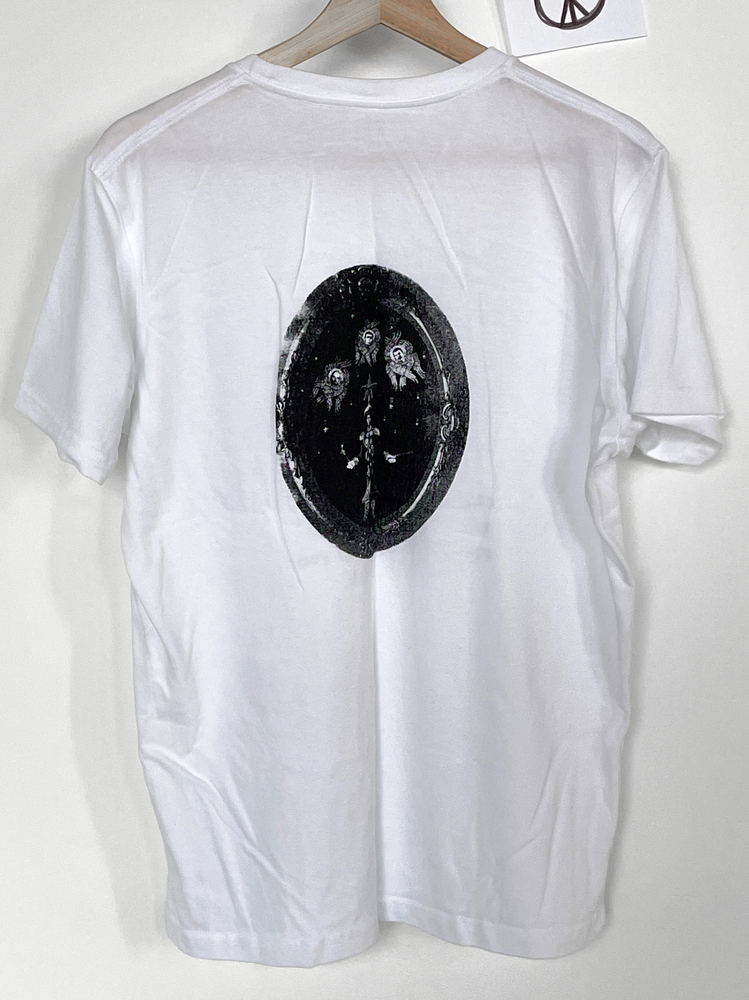
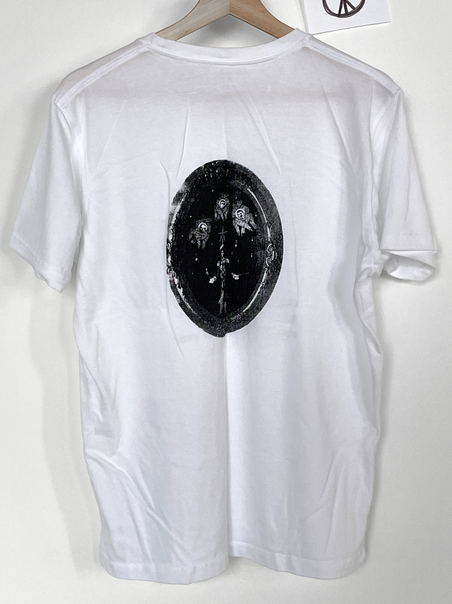

The project is a sarcastic take on how the content of Moscow Kremlin Museums is organised and presented in these museums. A multitude of things are included in this organisations, but the main themes are Soviet Union, Russian Empire, and religion. This t-shirt design illustrates all of these combined.
I designed it in such a way, that there’s an interplay of both sides of it. The typographic front part encircles the imagery on the back, describing the feelings of schoolkids, who are dragged there for excursions. Such placement shows the image of Moscow Kremlin Museums, created with the opinions and experiences of its visitors.